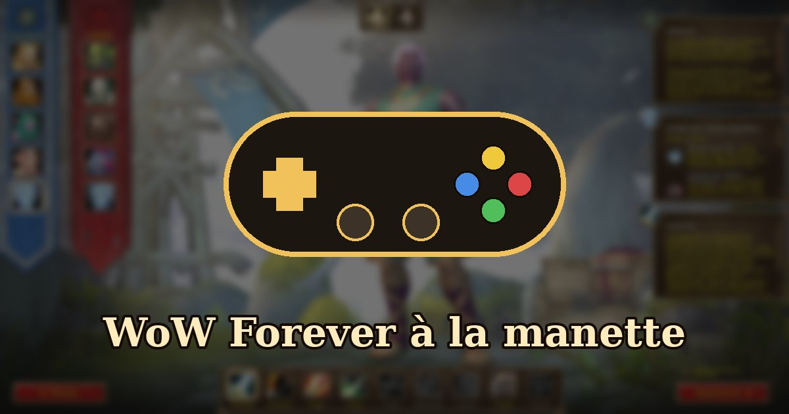

WoW Forever se joue à la manette
6 novembre 2026
Envie de jouer depuis ton canapé ? WoW Forever prend en charge les manettes, avec une interface pensée pour elles. Blizzard détaille comment ça marche.

Activer la manette
Toutes les manettes compatibles XInput fonctionnent (Xbox, et la plupart des manettes pour PC), avec les icônes Xbox ou PlayStation à l'écran. Pour l'activer : Échap › Options › Jeu › Manette. On y règle aussi la caméra, le ciblage, les barres d'actions et l'affichage.
Les commandes principales
- Cibler : LB pour un allié, RB pour un ennemi.
- A sauter, X interagir, B revenir en arrière, Y inspecter (ces touches lancent aussi tes sorts).
- Barres d'actions : 4 barres accessibles avec LT, RT ou LT + RT, et 3 ensembles de barres (84 emplacements au total), qu'on change avec LB + RB et la croix gauche/droite.
- Zoom de la caméra : LB + RB et le stick droit.
- Raccourcis : LB + RB + B pour les sacs, + haut pour les quêtes, + bas pour la discussion, + Y pour les améliorations.
Les sacs et les menus ont été revus pour se parcourir à la manette, et une légende des touches s'affiche en haut à gauche de l'écran. Petit bonus : sur les manettes compatibles, l'éclairage passe au bleu pour l'Alliance et au rouge pour la Horde.
Les limites pour l'instant
- La prise en charge est encore en version bêta : certaines fenêtres n'affichent pas encore d'aide pour les touches.
- Il faut toujours un clavier pour écrire dans la discussion.
- Blizzard vise à terme une expérience jouable entièrement sans clavier.
Source : Explorez WoW: Forever à une manette, site officiel de Blizzard.